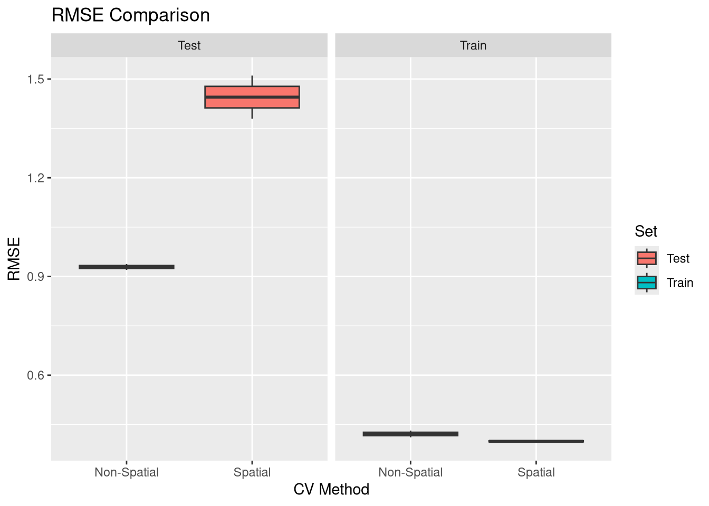
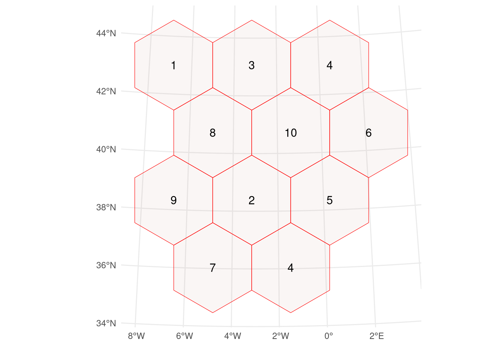
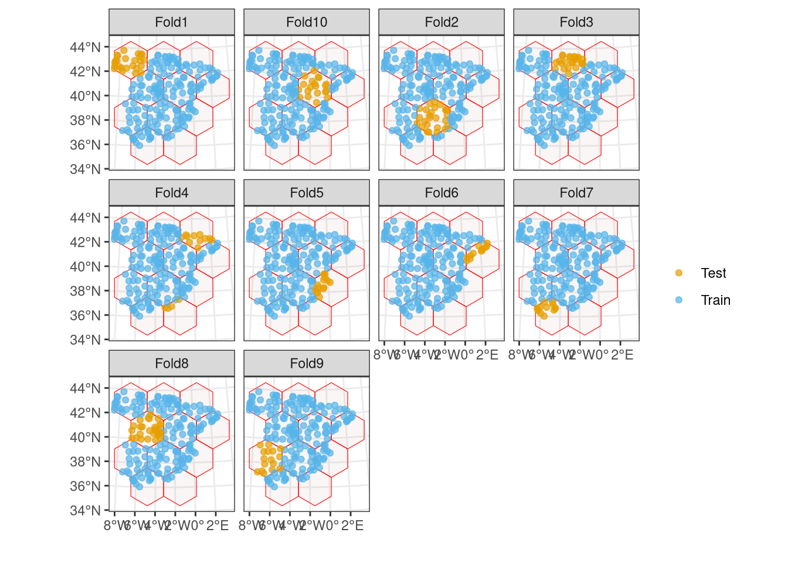
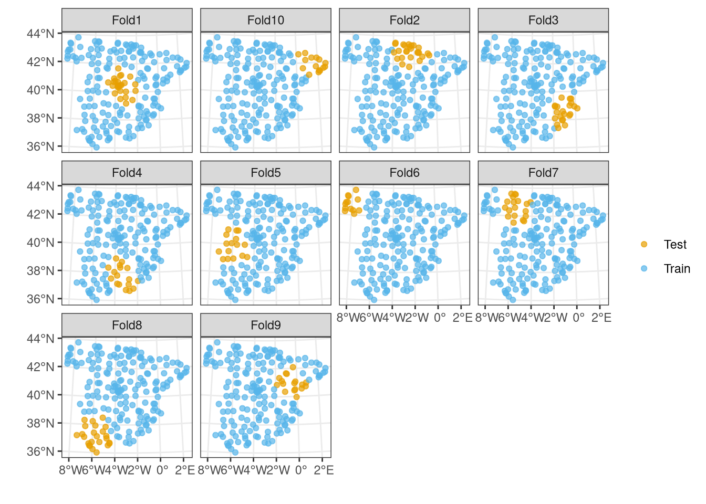
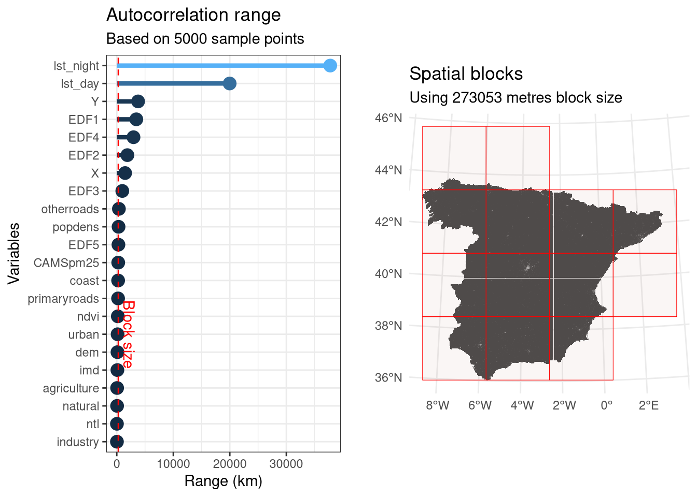

![]()
spain <- sf::read_sf("https://github.com/LOEK-RS/FOSSGIS2025-examples/raw/refs/heads/main/data/spain.gpkg")
covariates <- terra::rast("https://github.com/LOEK-RS/FOSSGIS2025-examples/raw/refs/heads/main/data/predictors.tif")
temperature <- sf::read_sf("https://github.com/LOEK-RS/FOSSGIS2025-examples/raw/refs/heads/main/data/temp_train.gpkg")
temperature <- terra::extract(covariates, temperature, bind = TRUE) |>
sf::st_as_sf()Specialized R packages for spatial cross-validation: sperrorest and blockCV
rstats
sml
This is the sixth part of a blog post series on spatial machine learning with R.
You can find the list of other blog posts in this series in part one.
This document provides an overview of two R packages, sperrorest and blockCV, that can be used for spatial cross validation, but are outside of standard machine learning frameworks like caret, tidymodels, or mlr3.
All of the examples below use the same dataset, which includes the temperature measurements in Spain, a set of covariates, and the spatial coordinates of the temperature measurements.
sperrorest
The sperrorest (https://doi.org/10.32614/CRAN.package.sperrorest) package is designed for spatial error estimation and variable importance assessment for predictive models. The package itself does not fit the models but provides a set of functions for spatial cross-validation, including data partitioning and model cross-validation.
While the sperrorest package has many functions (including a set of functions for data partitioning), its main function is sperrorest(). It performs spatial cross-validation for spatial prediction models, including variable importance assessment and prediction error estimation. To use this function, we need to provide the formula, the data, the coordinates, the model function, the model arguments, the prediction function, the sampling function, and the sampling arguments.
Let’s do it step by step. First, we need to prepare the data by extracting the coordinates and creating a data frame with the dependent variable, covariates, and coordinates.
library(sperrorest)
library(ranger)
coordinates <- sf::st_coordinates(temperature)
temperature_df <- sf::st_drop_geometry(temperature)
temperature_df$x <- coordinates[, 1]
temperature_df$y <- coordinates[, 2]Second, we need to define the formula for the model and the prediction function.
response_name <- "temp"
covariate_names <- colnames(temperature_df)[2:(ncol(temperature_df) - 7)]
fo <- as.formula(paste(
response_name,
"~",
paste(covariate_names, collapse = " + ")
))Third, we need to define the custom prediction function. The sperrorest package works with many model functions, but it requires a custom prediction function to extract the predictions from the model object. In this example, we use the ranger model, so we need to define a custom prediction function that extracts the predictions from the ranger model object. The predict() function from the ranger package returns a list with several elements, so we need to extract the predictions from this list.1
mypred <- function(object, newdata) {
predict(object, newdata)$predictions
}Fourth, we can perform the spatial cross-validation using the sperrorest() function. We just need to provide previously prepared data, the formula, the model function, and the prediction function. Moreover, we can also define some additional parameters of the model, such as the number of trees in the ranger model. Finally, the important part is to define the sampling function (smp_fun) and its arguments (smp_args). The sampling function is used to partition the data into training and testing sets: here, we use the partition_kmeans() function to partition the data spatially into folds using k-means clustering of the coordinates.2
# Spatial cross-validation
set.seed(6)
sp_res <- sperrorest(
formula = fo,
data = temperature_df,
coords = c("x", "y"),
model_fun = ranger,
model_args = list(num.trees = 100),
pred_fun = mypred,
smp_fun = partition_kmeans,
smp_args = list(repetition = 1:2, nfold = 3),
progress = FALSE
)The result is a list with several components, including the error at the repetition and fold levels, the resampling object, the variable importance (only when importance = TRUE), the benchmark, and the package version.
summary(sp_res$error_rep) mean sd median IQR
train_bias 0.003667002 0.0224183696 0.003667002 0.0158521812
train_stddev 0.399217628 0.0044832845 0.399217628 0.0031701609
train_rmse 0.399038491 0.0042677806 0.399038491 0.0030177766
train_mad 0.316892003 0.0078406248 0.316892003 0.0055441590
train_median 0.033006028 0.0001897285 0.033006028 0.0001341583
train_iqr 0.427813987 0.0083456683 0.427813987 0.0059012787
train_count 390.000000000 0.0000000000 390.000000000 0.0000000000
test_bias -0.009090677 0.0742284999 -0.009090677 0.0524874756
test_stddev 1.447676903 0.0934364402 1.447676903 0.0660695405
test_rmse 1.444959463 0.0926651037 1.444959463 0.0655241232
test_mad 1.341466967 0.1144815717 1.341466967 0.0809506957
test_median 0.101932523 0.0950544902 0.101932523 0.0672136746
test_iqr 1.876642239 0.1533036116 1.876642239 0.1084020233
test_count 195.000000000 0.0000000000 195.000000000 0.0000000000We can contrast the obtained results with the non-spatial cross-validation by changing the sampling function to partition_cv().
# Non-spatial cross-validation
set.seed(11)
nsp_res <- sperrorest(
formula = fo,
data = temperature_df,
coords = c("x", "y"),
model_fun = ranger,
model_args = list(num.trees = 100),
pred_fun = mypred,
smp_fun = partition_cv,
smp_args = list(repetition = 1:2, nfold = 3),
progress = FALSE
)To compare both results, we can plot the RMSE values for the training and testing sets of both spatial and non-spatial cross-validation.
library(ggplot2)
# Extract train/test RMSE from spatial CV
sp_train_rmse <- sp_res$error_rep$train_rmse
sp_test_rmse <- sp_res$error_rep$test_rmse
# Extract train/test RMSE from non-spatial CV
nsp_train_rmse <- nsp_res$error_rep$train_rmse
nsp_test_rmse <- nsp_res$error_rep$test_rmse
# Build data frame
rmse_df <- data.frame(
CV_Type = rep(c("Spatial", "Non-Spatial"), each = 4),
Set = rep(c("Train", "Test"), each = 2),
RMSE = c(sp_train_rmse, sp_test_rmse, nsp_train_rmse, nsp_test_rmse)
)
ggplot(rmse_df, aes(x = CV_Type, y = RMSE, fill = Set)) +
geom_boxplot() +
facet_wrap(~Set) +
labs(title = "RMSE Comparison", x = "CV Method", y = "RMSE")
The results show that the estimation using the spatial-cross validation is less optimistic than the non-spatial cross-validation for the test set.
More examples of the package use can be found at https://giscience-fsu.github.io/sperrorest/articles/spatial-modeling-use-case.html/
blockCV
The blockCV (https://doi.org/10.1111/2041-210X.13107) package provides a set of functions for block cross-validation, spatial and environmental clustering, and spatial autocorrelation estimation. The package itself does not fit the models.
library(blockCV)Cross-validation strategies separate the data into training and testing sets to evaluate the model’s performance. The blockCV package provides several cross-validation strategies, including block cross-validation, spatial clustering, environmental clustering, buffering LOO, and Nearest Neighbour Distance Matching (NNDM) LOO.
The block cross-validation is performed using the cv_spatial() function. It assigns blocks to the training and testing folds randomly, systematically or in a checkerboard pattern (the selection argument).
set.seed(61)
sb1 <- cv_spatial(
x = temperature,
k = 10, # number of folds
size = 300000, # size of the blocks in meters
selection = "random", # random blocks-to-fold
iteration = 50, # find evenly dispersed folds
progress = FALSE,
biomod2 = TRUE
)
train test
1 170 25
2 169 26
3 171 24
4 180 15
5 181 14
6 183 12
7 182 13
8 165 30
9 179 16
10 175 20
The result is a list with several components, including the folds list, the folds IDs, the biomod table, the number of folds, the input size, the column name, the blocks, and the records. For example, we can check the structure of the folds list with the str() function.
str(sb1$folds_list)List of 10
$ :List of 2
..$ : int [1:170] 117 87 103 84 105 99 119 101 98 97 ...
..$ : int [1:25] 23 31 57 39 58 60 21 22 32 27 ...
$ :List of 2
..$ : int [1:169] 117 87 103 84 105 99 119 101 98 97 ...
..$ : int [1:26] 153 155 93 108 95 91 88 154 94 140 ...
$ :List of 2
..$ : int [1:171] 117 87 103 84 105 99 119 101 98 97 ...
..$ : int [1:24] 12 45 175 176 166 20 177 19 167 16 ...
$ :List of 2
..$ : int [1:180] 117 87 103 84 105 99 119 101 98 97 ...
..$ : int [1:15] 134 138 136 133 187 192 174 173 189 190 ...
$ :List of 2
..$ : int [1:181] 117 87 103 84 105 99 119 101 98 97 ...
..$ : int [1:14] 161 142 143 150 160 149 146 147 158 151 ...
$ :List of 2
..$ : int [1:183] 117 87 103 84 105 99 119 101 98 97 ...
..$ : int [1:12] 4 8 5 2 193 1 6 194 164 3 ...
$ :List of 2
..$ : int [1:182] 117 87 103 84 105 99 119 101 98 97 ...
..$ : int [1:13] 128 124 129 130 127 132 131 120 126 125 ...
$ :List of 2
..$ : int [1:165] 117 87 103 84 105 99 119 101 98 97 ...
..$ : int [1:30] 61 70 75 52 77 83 79 86 50 48 ...
$ :List of 2
..$ : int [1:179] 23 31 57 39 58 60 21 22 32 27 ...
..$ : int [1:16] 117 87 103 84 105 99 119 101 98 97 ...
$ :List of 2
..$ : int [1:175] 117 87 103 84 105 99 119 101 98 97 ...
..$ : int [1:20] 163 181 159 157 186 67 71 41 178 179 ...The cv_plot() function additionally allows for the visualization of cross-validation results.
cv_plot(sb1, temperature)
Let’s compare the results of the block cross-validation with systematic and checkerboard patterns.
set.seed(16)
sb2 <- cv_spatial(
x = temperature,
k = 10,
rows_cols = c(4, 6),
hexagon = FALSE,
selection = "systematic"
)
train test
1 172 23
2 180 15
3 177 18
4 169 26
5 178 17
6 182 13
7 180 15
8 162 33
9 178 17
10 177 18
cv_plot(sb2, temperature)
set.seed(12)
sb3 <- cv_spatial(
x = temperature,
k = 10,
size = 300000,
hexagon = FALSE,
selection = "checkerboard"
)
train test
1 98 97
2 97 98
cv_plot(sb3, temperature)
The clustering strategies (cv_cluster()) are used to group the data into clusters based on spatial or environmental similarity. The spatial similarity is based only on the clustering of the spatial coordinates.
set.seed(7)
scv <- cv_cluster(x = temperature, k = 10) train test
1 169 26
2 169 26
3 173 22
4 178 17
5 179 16
6 182 13
7 176 19
8 171 24
9 178 17
10 180 15cv_plot(scv, temperature)
The environmental clustering, on the other hand, is based on the clustering of the values of the covariates extracted from the raster data.
set.seed(2)
ecv <- cv_cluster(x = temperature, r = covariates, k = 5, scale = TRUE) train test
1 164 31
2 190 5
3 182 13
4 154 41
5 90 105cv_plot(ecv, temperature)The next cross-validation strategy is buffering LOO (also known as Spatial LOO). It is performed using the cv_buffer() function, which selects a buffer around each point (test point) and uses the points outside the buffer as the testing set.3
set.seed(21)
bloo <- cv_buffer(x = temperature, size = 300000, progress = FALSE) train test
Min. : 97.0 Min. :1
Mean :132.7 Mean :1
Max. :170.0 Max. :1 cv_plot(bloo, temperature, num_plots = c(1, 50, 100))Note that above, we plot only the first, 50th, and 100th points to avoid overplotting.
The last cross-validation strategy implemented in the blockCV package is the Nearest Neighbour Distance Matching (NNDM) LOO. It is performed using the cv_nndm() function, which tries to match the nearest neighbor distance distribution function between the test and training data to the nearest neighbor distance distribution function between the target prediction and training points. Thus, in this base, we need to provide more arguments, including a raster with the covariates, the number of samples, the sampling strategy, and the minimum training size.
set.seed(12)
nncv <- cv_nndm(
x = temperature,
r = covariates,
size = 300000,
num_sample = 5000,
sampling = "regular",
min_train = 0.1,
plot = TRUE
) train test
Min. :192.0 Min. :1
Mean :192.9 Mean :1
Max. :193.0 Max. :1 cv_plot(nncv, temperature, num_plots = c(1, 50, 100))Let’s now use the block cross-validation to fit and evaluate a model.
# define formula
response_name <- "temp"
covariate_names <- colnames(temperature_df)[2:(ncol(temperature_df) - 7)]
fo <- as.formula(paste(
response_name,
"~",
paste(covariate_names, collapse = " + ")
))
# extract the folds
folds <- sb1$folds_list
model_rmse <- data.frame(fold = seq_along(folds), rmse = rep(NA, length(folds)))
for (k in seq_along(folds)) {
trainSet <- unlist(folds[[k]][1]) # training set indices; first element
testSet <- unlist(folds[[k]][2]) # testing set indices; second element
rf <- ranger(fo, temperature_df[trainSet, ], num.trees = 100) # model fitting on training set
pred <- predict(rf, temperature_df[testSet, ])$predictions # predict the test set
model_rmse[k, "rmse"] <- sqrt(mean(
(temperature_df[testSet, response_name] - pred)^2
)) # calculate RMSE
}
model_rmse fold rmse
1 1 1.1401856
2 2 0.7848595
3 3 0.9219486
4 4 0.8007453
5 5 0.6485726
6 6 1.2989341
7 7 0.8140209
8 8 1.2050918
9 9 0.9696801
10 10 0.8681127The blockCV package also provides functions for checking the similarity between the folds (cv_similarity()) and estimating the effective range of spatial autocorrelation (cv_spatial_autocor()). The first function is used to check the similarity between the folds in the cross-validation.
cv_similarity(cv = sb1, x = temperature, r = covariates, progress = FALSE)Warning: The following aesthetics were dropped during statistical transformation:
colour.
ℹ This can happen when ggplot fails to infer the correct grouping structure in
the data.
ℹ Did you forget to specify a `group` aesthetic or to convert a numerical
variable into a factor?The second function is used to estimate the effective range of spatial autocorrelation of all input raster layers or the response data – its role is to help to determine the size of the blocks in the block cross-validation.
cv_spatial_autocor(r = covariates, num_sample = 5000, progress = FALSE)
[1] "cv_spatial_autocor"More examples of the package’s use can be found at https://cran.r-project.org/web/packages/blockCV/vignettes/tutorial_2.html.
This blog post was originally written as a supplement to the poster “An Inventory of Spatial Machine Learning Packages in R” presented at the FOSSGIS 2025 conference in Muenster, Germany. The poster is available at https://doi.org/10.5281/zenodo.15088973.
Footnotes
More information on the custom prediction functions is at https://cran.r-project.org/web/packages/sperrorest/vignettes/custom-pred-and-model-functions.html.↩︎
There are several other partition functions available in the package, including
partition_disc(),partition_tiles(), andpartition_cv().↩︎This approach is a form of leave-one-out cross-validation.↩︎
Reuse
Citation
BibTeX citation:
@online{nowosad,
author = {Nowosad, Jakub},
title = {Specialized {R} Packages for Spatial Cross-Validation:
Sperrorest and {blockCV}},
url = {https://geocompx.org/post/2025/sml-bp6/},
langid = {en}
}
For attribution, please cite this work as:
Nowosad, Jakub. n.d. “Specialized R Packages for Spatial
Cross-Validation: Sperrorest and blockCV.” https://geocompx.org/post/2025/sml-bp6/.